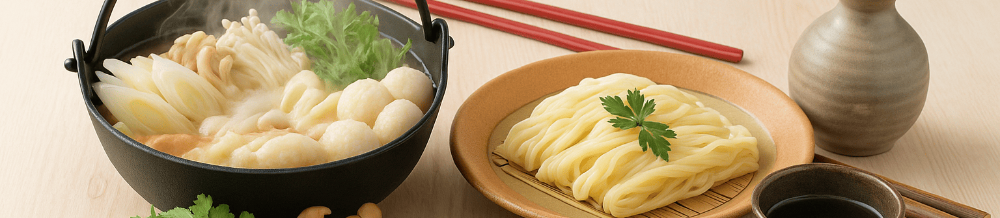
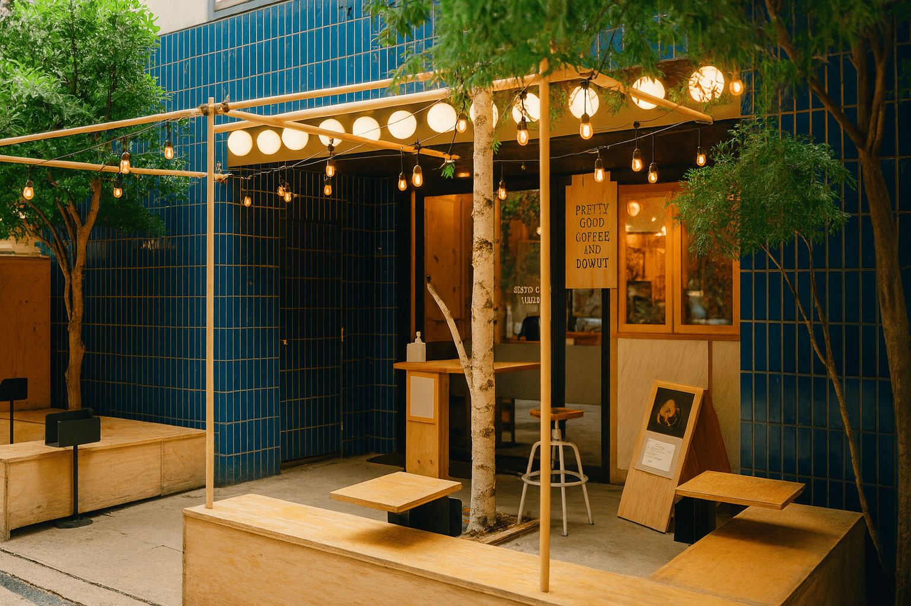
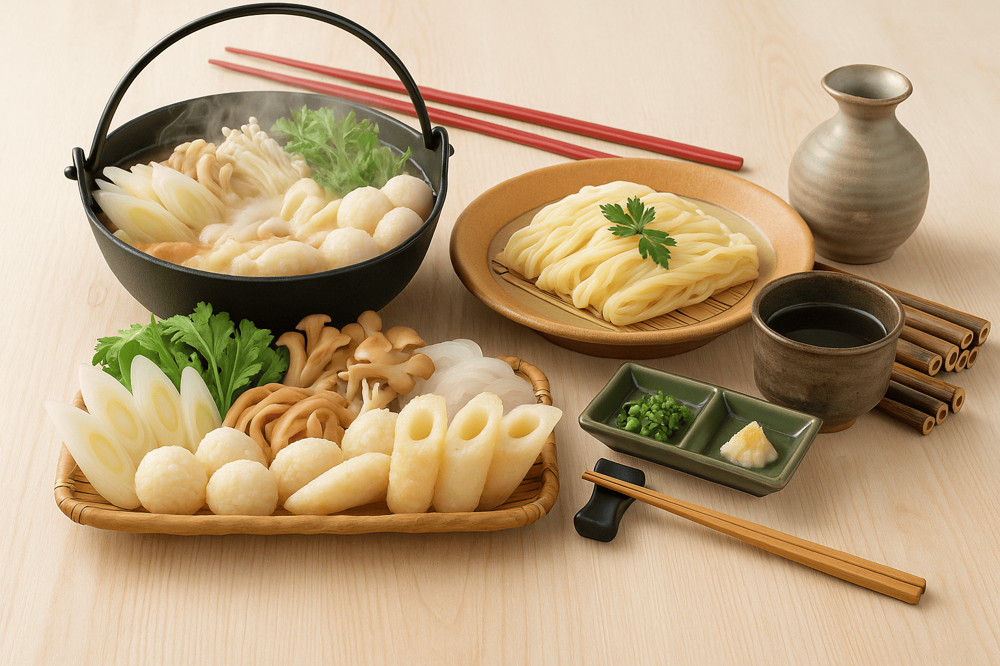
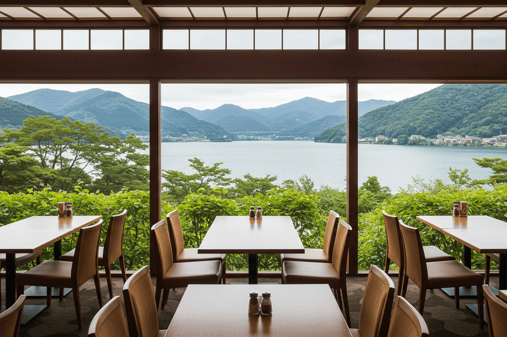
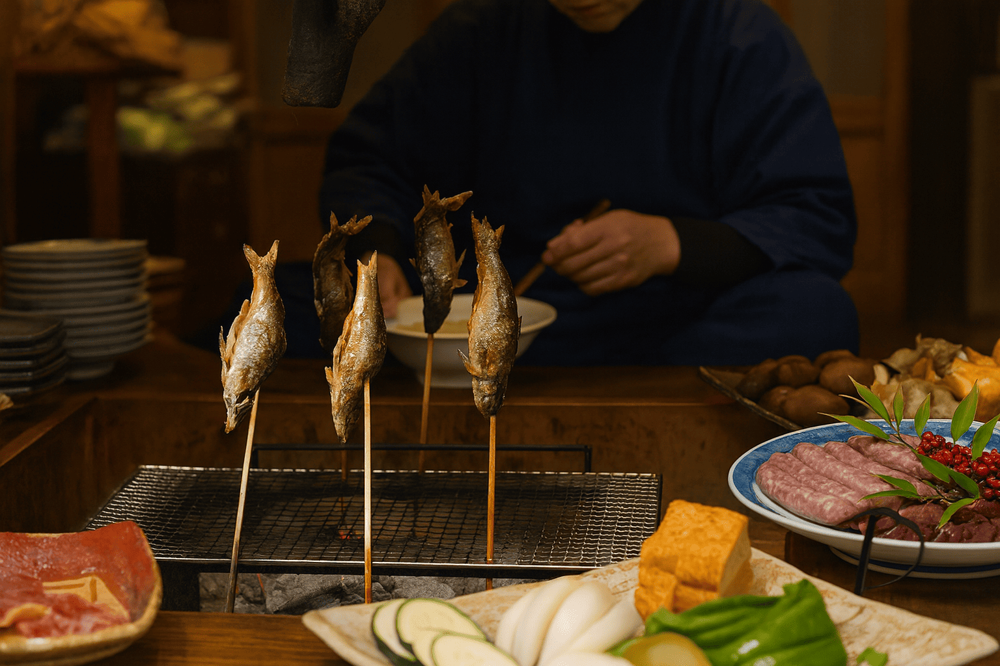
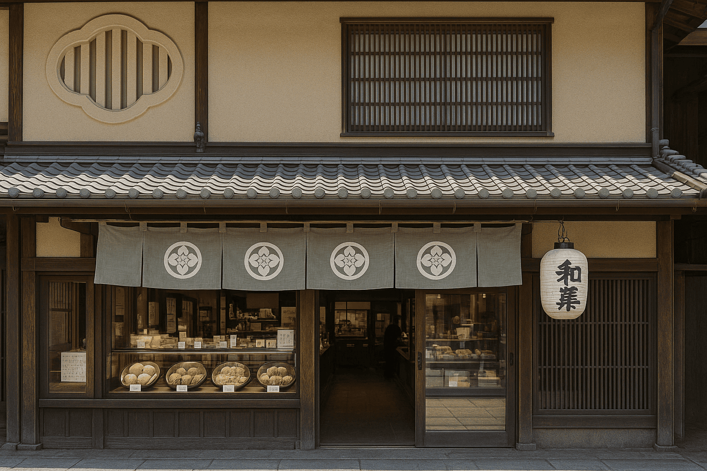

秋田県北のご当地グルメ
秋田県北エリアは、美味しい食文化の宝庫です。
比内地鶏の炭火焼きや親子丼、寒い季節に体の芯から温まるきりたんぽ鍋、新鮮な日本海の魚介や山の恵みを生かした郷土料理まで
多彩な味覚が楽しめます。
さらに、老舗和菓子や映えるスイーツも豊富。旅の合間に立ち寄りたくなる名店が点在しています。
ここでしか味わえない“秋田の味”を、ぜひ旅の思い出とともに楽しんでみてください。
-
 1大館鶏めし茶屋
大館市比内地鶏の鶏めし弁当が名物。店内では比内地鶏親子丼やラーメンも味わえる、旅の王道ランチスポット。
公式HPを見る -
 2かづの郷土ランチ館
鹿角市きりたんぽや鹿角牛など郷土料理ランチが揃う。観光途中に立ち寄りやすく、地元の味をまとめて楽しめる。
公式HPを見る -
 3湖畔の森レストラン
小坂町湖畔の絶景を眺めながら洋食ランチ。比内地鶏や山の幸を取り入れたメニューでちょっと贅沢な気分に。
公式HPを見る -
 4
4比内地鶏ダイニング
大館市比内地鶏の専門店。きりたんぽ鍋や炭火焼、親子丼など郷土料理を落ち着いた雰囲気で味わえる。
公式HPを見る -
 5港町いざかや
能代市ハタハタやしょっつる鍋など日本海の幸と地酒を堪能できる、地元感あふれる居酒屋。
公式HPを見る -
 6
6かづの餅菓子舗
鹿角市素朴で優しい甘さの「バター餅」が名物。地元の人に愛される昔ながらのおやつ。
公式HPを見る -
 7大館和菓子庵
大館市大館の老舗和菓子店。秋田犬をモチーフにした可愛い和菓子はお土産にもぴったり。
公式HPを見る -
 1
1森のカフェしらかみ
藤里町白神山地ふもとのカフェ。森を感じるスイーツや季節限定デザートは「映え」必至。
公式HPを見る